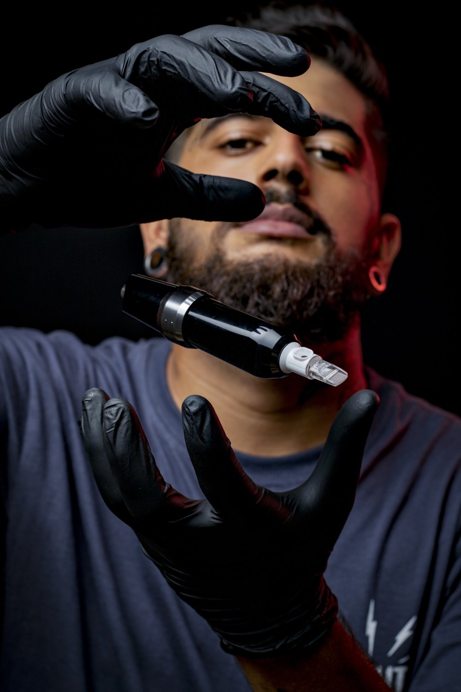
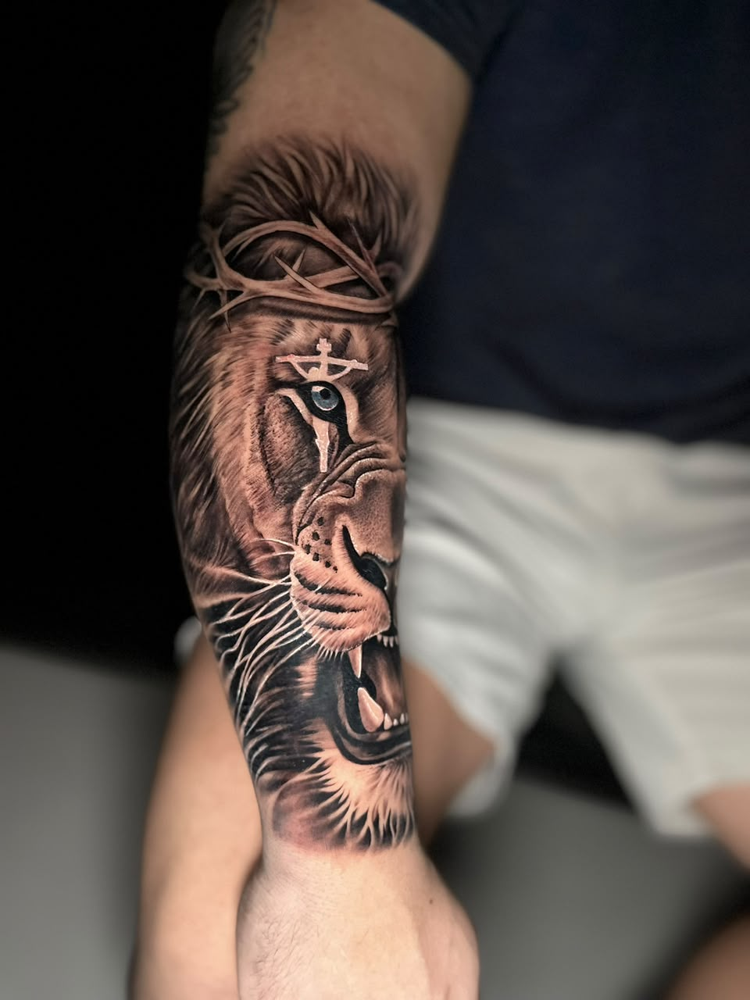
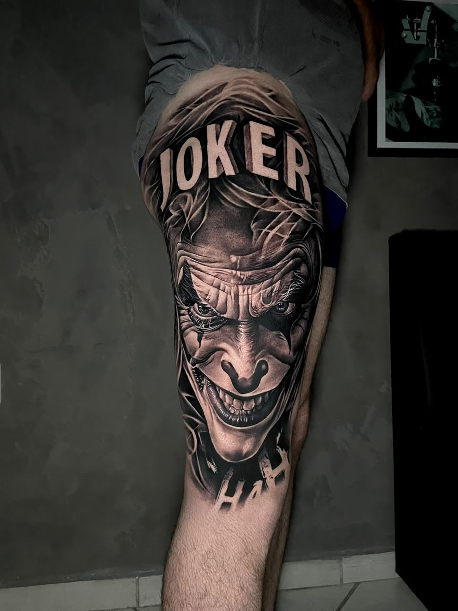
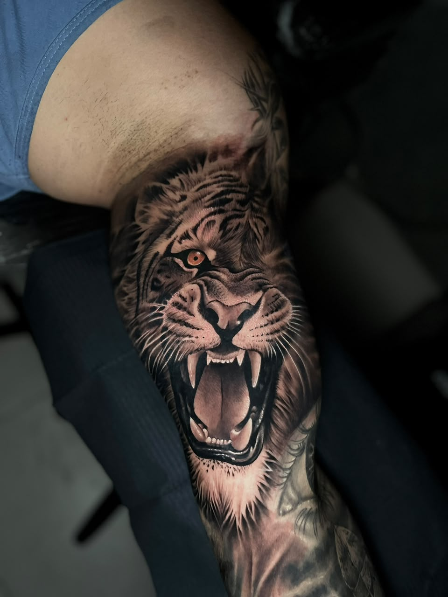
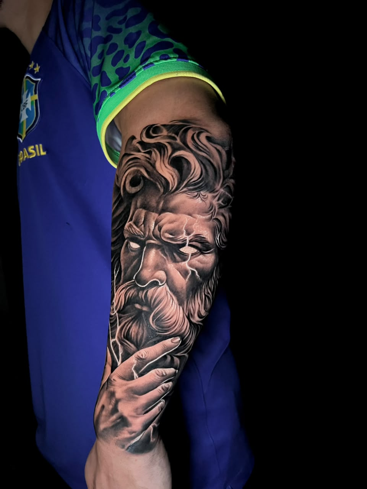
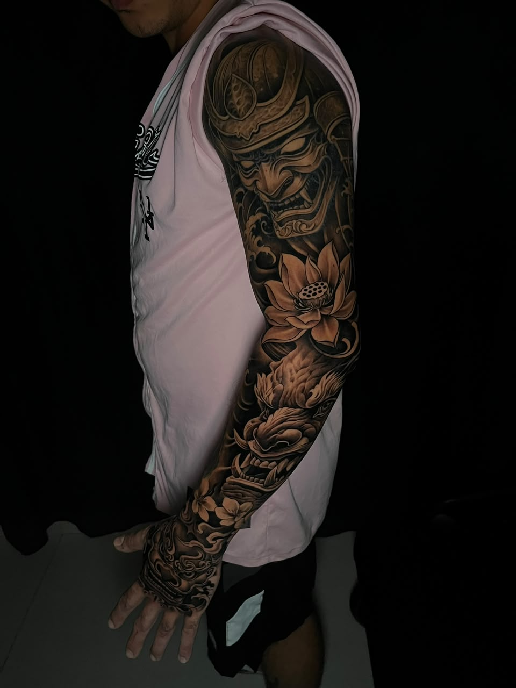
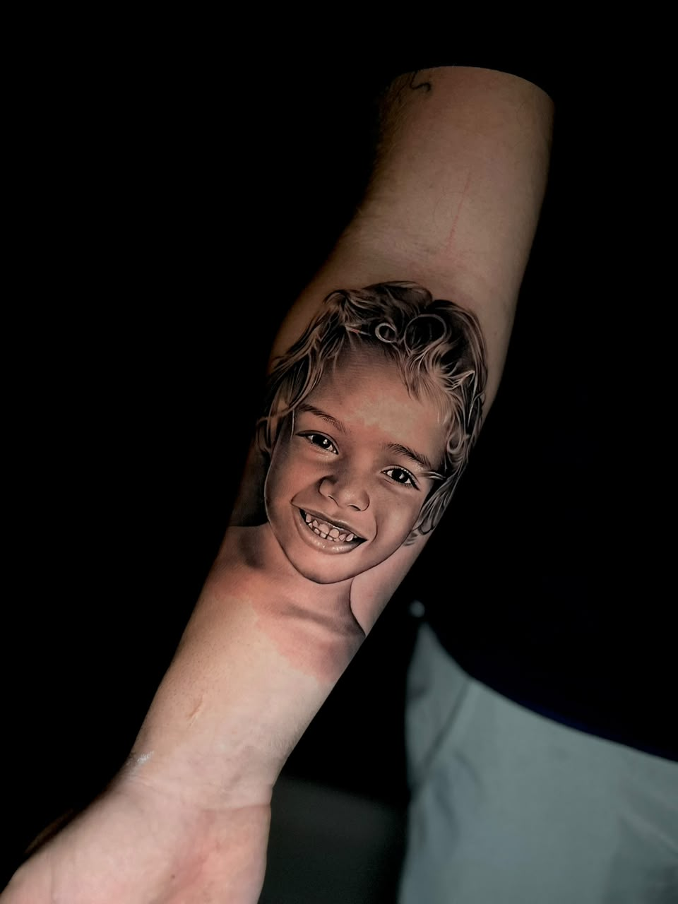
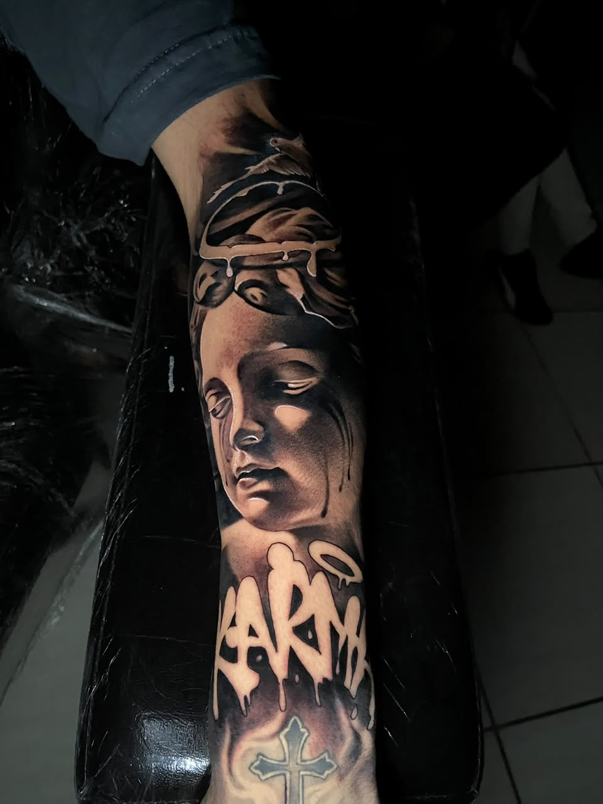
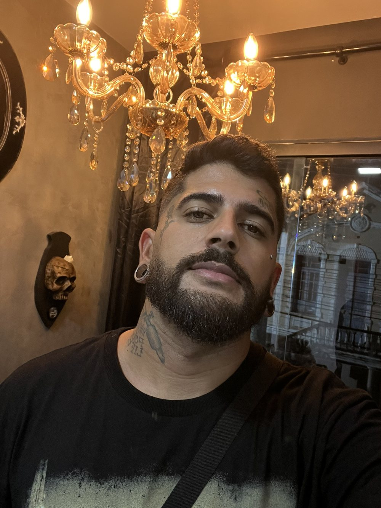
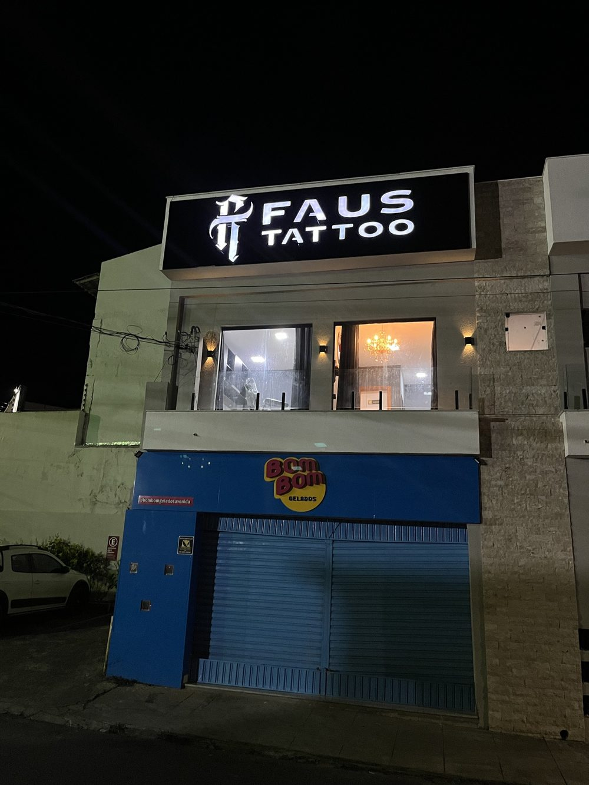

Realismo em preto e cinza · Ilhéus, BA
É tatuador?Curso de Biossegurança →
Especialista em preto e cinza: retratos, animais, religiosos e fechamentos.
Material descartável aberto na sua frente e protocolo completo de higiene.
Atendimento exclusivo, sem pressa, e acompanhamento na cicatrização.







Arraste para o lado →

Nascido e criado em Ilhéus, Bahia, tatuo desde 2017 e, desde então, venho me aperfeiçoando no realismo em preto e cinza.
Premiado em eventos de tatuagem e conhecido na cidade pelo trabalho bem feito e pelo bom atendimento, recebo cada cliente num espaço aconchegante e preparado para a sua tattoo.

Um espaço reservado, com hora marcada, para você tatuar com conforto e sem pressa. Cada sessão segue o protocolo completo de biossegurança.
Como chegarMande sua ideia, o local do corpo e o tamanho. Respondo com orçamento e datas disponíveis.
É tatuador?
Apostila completa, checklists e certificado para deixar seu estúdio seguro e profissional.